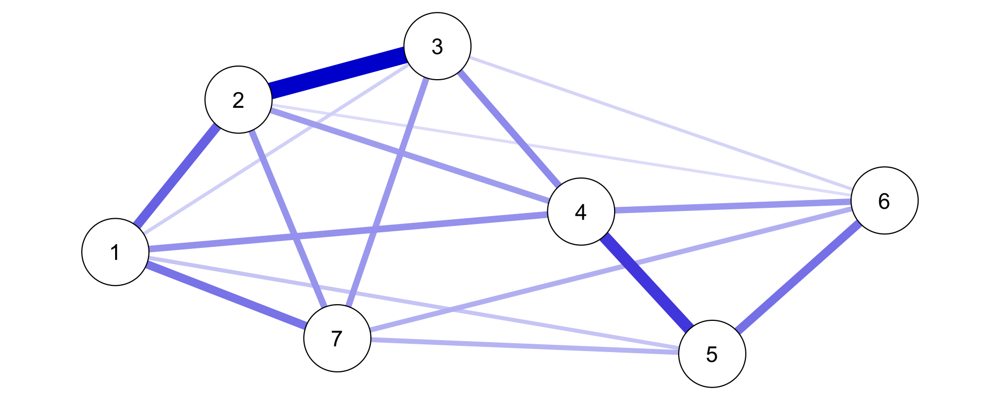
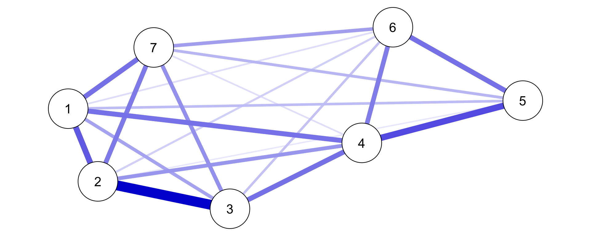
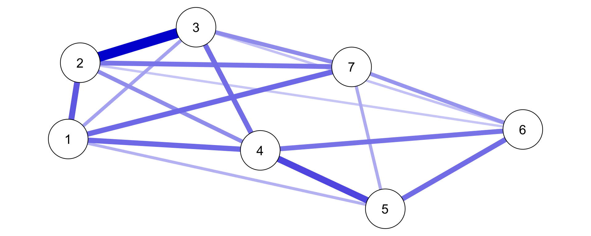
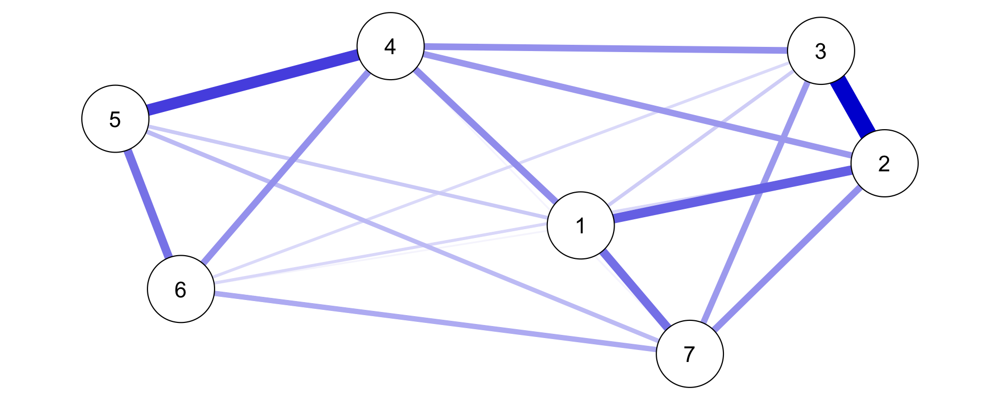
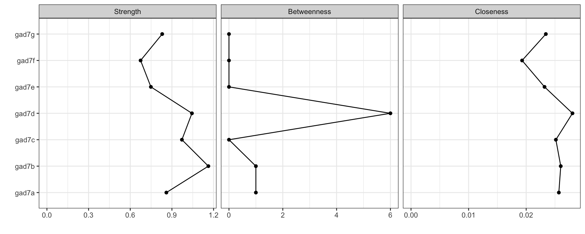

臨床心理統計研究法
3日目
授業内容(3日目)
- 13.心理ネットワークアプローチ
- 14.計算論的アプローチ
- 15.再現可能な臨床心理学研究
13.心理ネットワークアプローチ
心理ネットワークとは？
項目（心理変数）間のネットワーク構造を検討する方法.med[(Epskamp, Borsboom & Fried, 2018)]
ネットワークは，観察可能な変数を表すノード（円）と統計的関係を表すエッジ（線）から構成される
心理ネットワーク分析の手順
統計的手法によってノード間のエッジを推定する
推定されたエッジをもとにネットワークを図示する
ネットワーク特性の指標を検討する
ネットワークの正確度・安定性を検討する
- エッジはデータから推定される（重み付きネットワーク）
→(1)サンプルサイズに影響されるので正確度・安定性を検討
→(2)グローバルなネットワーク特性(small worldnessなど)は使えないので，ローカルなネットワーク特性(中心性指標)を用いる
有向・無向ネットワーク
有向ネットワークはエッジに方向性があるネットワーク(左図），無向ネットワークは方向性がないネットワーク（右図）
エッジの矢印は因果関係を示唆しているが，横断データではそれは難しい(→無向ネットワークの利用)
エッジの見方
エッジの色 符号を意味しており，青・緑の場合は正，赤の場合は負を表す
エッジの太さ 全体のノードからの影響を考慮した時の２つのノード間の関係の強さ
エッジの長さ エッジの強さの逆数。関係が強ければ強いほど短くなる
ペアワイズマルコフ確率場
無向ネットワークモデルの推定では，ペアワイズ・マルコフ確率場(pairwise Markov random field)がよく使われる(Epskamp, Haslbeck, Isvoranu,& Van Borkulo, 2022)
心理ネットワーク分析の主なペアワイズ・マルコフ確率場のモデルには以下の３つがある
Gaussian graphical model (GGM): 連続変数のデータ(エッジの値は-1から1の範囲)
Ising model: 2値変数のデータ(エッジの値は-∞から∞の範囲)
mixed graphical models (MGMs): 2値・順序・連続変数の混ざったデータ(エッジの値は-1から1の範囲)
Gaussian graphical model(GGM)
- GGMでは，多変量正規分布を用いて，連続変数間のネットワークを推定する
- \(\boldsymbol{Y}\) (ランダムに選んだ参加者からのn個の反応のベクトル)は，平均 \(\boldsymbol{\mu}\) と分散共分散行列 \(\boldsymbol{\Sigma}\) の多変量正規分布に従う
\[ \boldsymbol{Y} \sim N\left(\boldsymbol{\mu}, \boldsymbol{\Sigma}\right) \]
- GGMでは，分散共分散行列 \(\boldsymbol{\Sigma}\)からその逆行列である精度行列 \(\boldsymbol{K}\) を計算し( \(\boldsymbol{K}=\boldsymbol{\Sigma}^{-1}\))，精度行列 \(\boldsymbol{K}\) から偏相関行列を計算する
- 偏相関係数をエッジにしてネットワークをプロットする
Ising モデル
元々は磁性体に関する統計力学的モデルだが，２値データのネットワークの記述に使える
２値反応のペアの同時確率をモデル化(Epskamp et al., 2022)
\[\operatorname{Pr}(\boldsymbol{Y}=\boldsymbol{y})=\frac{1}{Z} \exp \left(\sum_{i} y_{i} \tau_{i}+\sum_{<i, j>} y_{i} y_{j} \omega_{i j}\right)%\]
- \(\tau_{i}\) は閾値.med[(どっちの反応が出やすいか）]， \(\omega_{i j}\) はノード間の反応の類似度を表す。Zは確率の合計が１になるように機能する
- Zの計算は， \(\boldsymbol{Y}\) の全ての可能性について考慮するので20変数以上の多変量推定は難しい(その場合は，単変量推定する)
Mixed graphical models(MGMs)
- 2値・順序・連続変数が混ざったデータに適用できる(Epskamp et al., 2022)
- データのタイプに合わせてノードごとに確率分布が適用(指数分布族: 正規分布，ポワソン分布，指数分布，多項分布）
- ノードごとに一般化線形モデルによって推定し，推定されたパラメータが最終モデルで統合される
- MGMsは，ペアワイズである必要もなくて，高次の交互作用を含めたmoderated network modelも検討できる
モデル選択
- ネットワークは，エッジが１つもないものから全てのノード間にエッジがある飽和モデルの間に，可能性のあるネットワークが大量にある(Blanken, Isvoranu & Epskamp, 2022)
- オッカムの剃刀に従い，パフォーマンスを下げないようにして，シンプルなモデルを選ぶ
- 心理ネットワーク分析のモデル選択には以下の４つがある
しきい値(Thresholding)
刈り込み(Pruning)
モデル探索(model search)
正則化(regularization)
しきい値(Thresholding)
- しきい値では，ある基準（p値, false discovery rate, credibility interval, Bayes factor）に基づいて，エッジを除去する（エッジを0に設定）
- 基準以下のエッジを見せてないだけで影響は残る
刈り込み(Pruning)
刈り込みでは，ある基準（p値, false discovery rate, credibility interval, Bayes factor）に基づいて，除去した上で（エッジを0に設定），再推定する
再推定するので，基準以下のエッジを0としたときのネットワークが推定される
モデル探索(model search)
- 可能なネットワークを反復的に探索して最もデータフィットしたモデルを選ぶ（AIC, BIC, EBICなどの情報量規準を用いる)
正則化(regularization)
モデルの複雑さに罰則をかけて，ネットワークを疎.med[(sparse)]にする。影響力が弱いエッジはゼロに近づき単純化できる
LASSO .med[(least absokute shrinkage and selection operator)]の一種のGraphical LASSOを使う。罰則の強さの調整は，cross-validation(CV)やEBICを使う
GGMでのモデル選択の推奨(Isvoranu & Epskamp, 2021)
(1)サンプルサイズが300の場合，ネットワーク構造の発見には，正則化が好ましい
(2)サンプルサイズが1000の場合，ネットワーク構造や強いエッジに興味があるなら正則化，特定のエッジに関心があるならモデル探索が好ましい
(3)サンプルサイズが5000の場合，真のネットワークの探索には，モデル探索が好ましい
IsingモデルとMGMsでのモデル選択の推奨(Blanken et al, 2022)
Isingモデルの場合，小中サンプルサイズでは正則化手法が見やすく，大サンプルサイズでは非正則化手法も使える。現状，MGMsで使えるのは正則化手法のみ
** 順序・非正規変数での注意点.med[(Blanken, Isvoranu & Epskamp, 2022)]**
- 順序変数ではポリコリック相関を使うが，小サンプルサイズでは不安定になる.med[（psychonetricsパッケージの推定法やBGGMパッケージを使う）]
- 正規分布していないデータの場合は，スピアマンの順位相関係数を用いてGGMする
サンプルサイズ
- ノードは３０より少ないのが望ましく，できるだけサンプルサイズが大きいほうが望ましい.med[(Isvoranu & Epskamp, 2021)]
- ネットワークの構造を調べるより，特定のエッジに焦点をしぼった方が大きなサンプルサイズが必要
欠測処理
- bootnetでは欠測値除去が必要だが，psychonetricsでは完全情報最尤推定法が使える(estimator = “FIML”)
エッジの解釈法
PRMFのエッジは，２変数以外の影響も考慮した２変数の関係を表す.med[（ネットワーク全体の影響を考慮する）]
エッジの解釈としては以下の２つがある
(1)予測可能性の示唆: 他の変数の影響を考慮しても，ある変数から別の変数が予測できる可能性がある
(2)因果関係の可能性の示唆: 因果の方向性は不明だが，そのエッジにはなんらかの因果的な効果がある可能性はある.med[(逆にいうと，強い理論的予測による仮説検証の結果のような解釈はしない)]
ノードの中心性指標
心理ネットワーク分析で使えるネットワークの指標として，以下の中心性指標がある
Strength:あるノードがつながっている全てのエッジの強さの合計。あるノードの全体に対する影響力を示している
Closeness: あるノードと他の全てのノード間の最短経路長の合計の逆数。あるノードがどのくらい間接的な影響を含めて他のノードとつながっているのかを示している
Betweeness: 2つのノード間の最短経路上に，あるノードが何回あるのかを示している。あるノードが2つのノードの経路上でどのくらい重要かを示している
エッジの正確度と中心性指標の安定性
- 推定されたエッジはサンプルやサンプルサイズの影響をうけるので，正確度(accuracy)や安定性(Stability)を検討する.med[(Epskamp, Borsboom,& Fried, 2018)]
ブートストラップ法による信頼区間をプロットすることでエッジの重みの正確度を検討する .med[(有意性の検討には使わない)]
データのサブセットを用いた場合の中心性指標の安定性を検討する .med[(サンプルサイズを小さくしても安定するか検討，CS係数が0.25未満は不適切であり0.5を超えている必要がある)]
エッジの重みと中心性指標間でブートストラップ差異検定を行って，それらが有意に異なるのかを検討する
※1は必須，2は中心性指標を使う場合，3は目的に合わせて
Rパッケージ
アムステルダム大学の研究者達が開発した以下のRパッケージで，横断データの心理ネットワーク分析は実施できる
qgraph:ネットワーク推定(GGM)とプロット
bootnet: ネットワーク推定(GGM & Isingモデル)，ネットワークの正確度と安定性の検討
psychonetrics：より洗練化した書き方でネットワーク推定(GGM & Isingモデル)
mgm:ネットワーク推定(MGMs)
アムステルダム大学の統計ソフトJASPには，心理ネットワーク分析が入っており，ちょっと試すのに便利
心理ネットワーク分析を試してみよう！
Jordan et al.(2017)が，3404名からGAD-7(不安)，PHQ-9(うつ),PHQ-15(身体症状)を収集したデータで試す
使用するRパッケージの読み込み
データの読み込み
Jordan et al.(2017)のデータをダウンロードして，読み込む
GAD-7（不安に関する７項目）のデータを使う。renameで変数名を整理する
モデル選択： しきい値
bootnetのestimateNetwork()関数で，thresholdとalphaを指定する
GAD-7は4件法で順序変数なので，「corMethod = “cor_auto”」と指定して，自動的にポリコリック相関で推定
モデル選択： 刈り込み
psychonetricsパッケージのprune()関数を用いる。psychonetricsはパイプ演算子を使って可読性の高いコードが書きやすい
モデル選択：モデル探索
モデル探索はmodelsearch()で行う
モデル選択：正則化
bootnetのestimateNetwork()関数を使って，EBICでパラメータ調整をするGLASSOを使う(「default=“EBICglasso”」を指定する）
エッジの重みの正確度
bootnetのbootnet()関数を使う。summaryでも推定結果を確認できるが，プロットのほうが確認がしやすい
中心性の指標のプロット
qgraphパッケージのcontralityPlot関数でプロットできる。デフォルトではStrengthのみが出力されるので，includeで”Strength”, “Betweenness”, “Closeness”の３つを指定する
中心性指標の安定性(Stability)
bootnet()関数を使う。「type = “case”」を指定するとケースドロップ時の安定性を推定できる。statisticsで”strength”, “closeness”, “betweenness”を指定する
CS係数を確認する。StrengthとClosenessはCS係数が0.5を超えているが，Betweenessは低いので，解釈を控える必要がある
有意差検定
bootnetのdifferenceTest()関数を使う
Strengthがgad7bとgad7fで差があるかを検討すると，95%CIが0をまたいでおらず，gad7bはgad7fよりも有意にstrengthが大きい
エッジ間の差の検定結果をプロットする(エッジ間で有意な差がある場合は黒く塗りつぶされ，有意ではない場合は灰色に塗りつぶされる)
Strengthにおけるノード間の差の検定結果をプロットする(ノード間で有意な差がある場合は黒色，有意ではない場合は灰色に塗りつぶす)
まとめ
- 心理ネットワーク解析は新しい方法だが，偏相関をエッジとしたネットワークを描く方法と考えると難しくない
- 便利なRパッケージも増えており実施は簡単だが，モデル選択・エッジ・中心性指標の評価などは理論的な理解も必要
- 日々新しい方法の開発と解析法の推奨の変化があるので，アムステルダム大学のPsych Systemsのサイトを確認したり，最新の動向をおさえる
参考文献
- Blanken, T. F., Isvoranu, A. M., & Epskamp, S. (2022). Chapter 7. Estimating network structures using model selection. In Isvoranu, A. M., Epskamp, S., Waldorp, L. J., & Borsboom, D. (Eds.). Network psychometrics with R: A guide for behavioral and social scientists. Routledge, Taylor & Francis Group.
- Epskamp, S., Borsboom, D., & Fried, E. I. (2018). Estimating psychological networks and their accuracy: A tutorial paper. Behavior Research Methods, 50(1), 195–212.
- Epskamp, S., Haslbeck, J. M. B., Isvoranu, A. M., & Van Borkulo, C. D. (2022). Chapter 6. Pairwise Markov random fields. In Isvoranu, A. M., Epskamp, S., Waldorp, L. J., & Borsboom, D. (Eds.). Network psychometrics with R: A guide for behavioral and social scientists. Routledge, Taylor & Francis Group.
- Isvoranu, A., & Epskamp, S. (2021). Which Estimation Method to Choose in Network Psychometrics? Deriving Guidelines for Applied Researchers. preprint
- Jordan, P., Shedden-Mora, M. C., & Löwe, B. (2017). Psychometric analysis of the Generalized Anxiety Disorder scale (GAD-7) in primary care using modern item response theory. PloS One, 12(8), e0182162.
14.計算論的アプローチ
?
?
?
?
?
?
?
?
?
?
?
?
?
?
?
?
?
?
?
?
?
?
?
?
?
?
?
?
?
?
?
?
?
?
15.再現可能な臨床心理学研究
再現性の危機
心理学研究100本のうち再現されたのは39本(Open Science Collaboration, 2016, Science)
引用数が多く効果があるとされた臨床医学研究45本のうち再現されたのは20本(Ioannidis, 2005, JAMA)
1576名の調査から，70%が他の研究者の研究を再現できず，50%が自分の研究の再現もできなかった(Baker, 2016, Nature)
→研究知見を信じていいの？
『心理学の7つの大罪』
Chris Chambers著
大塚紳一郎訳
みすず書房
2019年

３つの再現性(Goodman et al., 2016)
1.方法の再現可能性: 論文と同じデータに同じ方法を用いて，同じ結果が得られること
2.結果の再現可能性: 新規のデータに同じ方法を用いて，同じ結果が得られること
3.推論の再現可能性: 結果から質的に同じ結論が得られること
方法の再現可能性を低める現状の課題
- 「同じデータ + 同じ方法 = 同じ結果」って，当たり前じゃないの？
→同じデータが難しい・・・
--
2000-2014年の生物医学論文のうち生データが直接利用可能なのは441本中0本だった(Iqbal et al., 2016)
2015-2017年に出版された生物医学論文のうちデータの入手可能性を記載していたのは，たった18.3%(Wallach et al., 2018)
→データが無ければそもそも不可能・・・